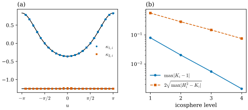
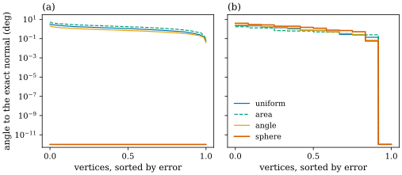

41.3 A Panorama of Discrete Curvatures
Goals
- vector curvature(vector area, mean curvature normal, Gauss curvature normal)를 vertex normal에 projection해 scalar curvature를 만들고, 어느 normal을 쓰느냐에 따라 부호와 값이 어떻게 달라지는지 설명할 수 있다.
- discrete \(H\)와 \(K\)에서 discrete principal curvature를 만들고, \(H^2 \lt K\)일 때의 clamp와 umbilical point 근처에서의 불안정성을 설명할 수 있다.
- sphere-inscribed normal을 정의하고, vertex와 이웃이 한 sphere 위에 있으면 그것이 정확한 normal임을 증명할 수 있다.
- 여러 discrete curvature가 각각 무엇을 정확히 보존하는지 표로 비교하고, Chapter 32의 plane curve와 대응시킬 수 있다.
Prerequisites
- Section 41.2: area gradient Theorem 41.2.7, total mean curvature의 gradient Theorem 41.2.11.
- Chapter 40: discrete Gaussian curvature Definition 40.1.12, quadric fitting과의 비교 Remark 40.1.15, 세 curvature normal과 그 projection Remark 40.3.12, discrete mean curvature Definition 40.4.14.
- Chapter 38–39: vertex normal Definition 38.5.6, Proposition 38.5.8. \(\kappa_{1,2} = H \pm \sqrt{H^2 - K}\) (39.3.1), \(H\mathbf{N}\)이 normal의 선택에 무관하다는 것 Proposition 39.3.1.
- plane curve의 네 discrete curvature와 비교표: Definition 32.3.5와 Section 32.3의 표.
Motivation
Section 41.2로 사슬이 완성되었다. 부피, 넓이, total mean curvature의 gradient가 각각 vector area, mean curvature normal, Gauss curvature normal이다. 그 결과 우리 손에는 vertex마다의 curvature가 여럿 있다. vector 셋(\(\mathbf{A}_i\), \((L\mathbf{x})_i\), \((K\mathbf{N})_i\))과 scalar 둘(angle defect \(\delta_i\), edge의 \(H_{ij}\))이 있고, vertex normal도 Section 38.5에서 넷을 만들었다. Section 40.3은 vector를 normal에 projection하면 scalar가 된다고만 말하고 비교를 이 절로 미뤘다(Remark 40.3.12). 이 절은 그 전체를 한자리에 놓는다. 무엇을 쓰는가는 Chapter 32의 결론과 같은 질문으로 정해진다. 무엇을 정확히 지켜야 하는가?
From Vectors to Numbers
smooth surface에서 mean curvature vector \(H\mathbf{N}\)은 normal의 선택에 무관하지만 \(H\)는 아니다(Proposition 39.3.1). 수 \(H\)를 얻으려면 normal을 하나 골라 vector를 그 normal에 projection해야 한다. mesh에서도 같다. 다만 mesh에는 vertex normal이 여럿 있다. vertex normal \(\mathbf{N}_i^w\)(Definition 38.5.6, \(w\)는 uniform, area, angle 등)와 dual area \(A_i\)에 대하여
라 쓰자. dgdec.mean_curvature는 area-weighted normal과 mixed area를 쓴 \(H_i^A\)다. 이 장에서 따로 말하지 않으면 \(H_i\)는 이것이고, \(K_i\)는 angle defect의 \(\delta_i/A_i\)(Definition 40.1.12)다.
Proposition 41.3.1 (scalar curvatures as projections). interior vertex \(i\)에서 다음이 성립한다. (a) mesh의 orientation을 뒤집으면 \(H_i^w\)와 \(H_{ij}\)는 부호가 바뀌고, \(K_i^w\)와 \(\delta_i\)는 그대로다. (b) \(\abs{H_i^w} \le \abs{(L\mathbf{x})_i}/(2A_i)\)이고, 등호는 \(\mathbf{N}_i^w\)가 \((L\mathbf{x})_i\)에 평행할 때뿐이다. (c) 두 vertex normal \(\mathbf{N}_i^w\), \(\mathbf{N}_i^{w'}\)에 대하여 \(\abs{H_i^w - H_i^{w'}} \le \tfrac{\abs{(L\mathbf{x})_i}}{2A_i}\abs{\mathbf{N}_i^w - \mathbf{N}_i^{w'}}\)이다.
Proof. (a) cotan weight와 dual area는 각과 길이만으로 정해지므로 \((L\mathbf{x})_i\)는 orientation에 무관하다. face normal은 모두 부호가 바뀌고 가중치(1, 넓이, 각)는 그대로이므로 \(\mathbf{N}_i^w\)는 \(-\mathbf{N}_i^w\)가 되고, \(H_i^w\)의 부호가 바뀐다. bending angle은 부호가 바뀌므로(Proposition 39.5.6(c)) \((K\mathbf{N})_i\)와 \(H_{ij} = -\tfrac12\ell_{ij}\theta_{ij}\)의 부호가 바뀐다. 그래서 \(K_i^w\)는 부호가 두 번 바뀌어 그대로다. \(\delta_i\)는 corner angle만으로 정해진다. (b), (c)는 Cauchy–Schwarz inequality다(\(\abs{\mathbf{N}_i^w} = 1\)).
(a)는 smooth의 사정과 같다. mean curvature의 부호는 normal을 고른 결과이고 vector 자체에는 없다. Gaussian curvature의 부호는 normal과 무관하다. 다만 discrete에서는 길이 둘이다. angle defect \(\delta_i\)는 normal 없이 edge length만으로 부호까지 정해지고, \(K_i^w\)는 normal을 하나 골라야 계산되지만 그 결과는 orientation에 무관하다. (c)는 normal들이 서로 가까우면 \(H_i^w\)들도 가깝다는 뜻이다. 거꾸로 \((L\mathbf{x})_i\)가 거의 tangent이면, 곧 \(H\)가 작은데 tangential 오차가 그만큼 있으면, normal을 바꾸는 것만으로 \(H_i^w\)의 부호가 바뀔 수 있다(Exercise 41.3.6).
Example 41.3.2 (a cube corner and the torus).
(a) unit cube \([0, 1]^3\)을 12개의 triangle로 나누되 \(x = 1\) 정사각형의 대각선만 corner \((1, 0, 0)\)을 지나게 하자(그 corner에 triangle 넷). 대각선과 무관하게 \((L\mathbf{x})_i = -(1, -1, -1)\)이고(Example 40.3.7(c)의 대칭판), mixed area는 \(A_i = 0.75\)다. uniform과 area-weighted normal은 \((2, -1, -1)/\sqrt6\)이고 angle-weighted와 sphere-inscribed normal(아래 Definition 41.3.6)은 \((1, -1, -1)/\sqrt3\)이다(Example 38.5.9와 같은 상황). 그래서 \(H_i^U = H_i^A = -1.0887\), \(H_i^\theta = -1.1547\)이고, 비는 두 normal 사이의 각 \(19.47^\circ\)의 cosine \(0.9428\)이다. (b) torus_mesh(2, 0.8, 24, 48)에서는 \(H_i^U, H_i^A, H_i^\theta\), sphere-inscribed normal로 projection한 값, 그리고 \(-\abs{(L\mathbf{x})_i}/(2A_i)\)가 vertex마다 \(2.4\times10^{-5}\) 안에서 같고, 모두 정확한 \(H\)와 \(0.0029\) 안에서 같다. 규칙적인 mesh에서는 normal의 선택이 \(H\)에 거의 영향을 주지 않는다.
Verification: verify/v-41-3-panorama.py
Discrete Principal Curvatures
smooth surface에서 principal curvature는 \(\lambda^2 - 2H\lambda + K = 0\)의 두 근 \(\kappa_{1,2} = H \pm \sqrt{H^2 - K}\)이다((39.3.1)). discrete \(H_i\)와 \(K_i\)를 이 식에 넣으면 principal curvature의 discrete 판이 생긴다. 강의 슬라이드는 Steiner의 \(H_i\)와 angle defect를 같은 dual area로 나누어 넣는다 [CMU-DDG L17] slide 6. 문제가 하나 있다. smooth에서는 \(H^2 - K = \tfrac14(\kappa_1 - \kappa_2)^2 \ge 0\)이지만, 두 discrete 양은 서로 다른 근사라서 \(H_i^2 - K_i\)가 음수일 수 있다.
Definition 41.3.3 (discrete principal curvatures). interior vertex \(i\)에서 점마다의 discrete mean curvature \(H_i\)와 discrete Gaussian curvature \(K_i\)를 하나씩 골랐을 때
를 \(i\)의 discrete principal curvatures(이산 주곡률)라 한다. 여기서 \(s_+ = \max(s, 0)\)이다. \(H_i^2 \lt K_i\)이면 \(\kappa_{1,i} = \kappa_{2,i} = H_i\)가 되는데, 이것을 clamp라 부른다. 이 장의 기본값은 \(H_i = H_i^A\), \(K_i = \delta_i/A_i\)(mixed area)다.
예: saddle \(z = x^2 - y^2\)의 grid mesh(\([-0.5, 0.5]^2\), \(17\times17\))의 원점에서 \(H_i = 0\), \(K_i = -3.9536\)이므로 \(\kappa_{1,2} = \pm1.988\)이다. 정확한 값은 \(\pm2\)다. 비예: 이 정의는 principal direction을 주지 않는다. \(H_i\)와 \(K_i\)는 수 두 개이고, 방향의 정보는 그 안에 없다. 방향이 필요하면 shape operator 자체를 근사해야 한다(예: one-ring에 quadric을 맞추기, Remark 40.1.15).
Proposition 41.3.4 (stability of the principal curvatures). \(\kappa_\pm(H, K) := H \pm \sqrt{(H^2 - K)_+}\)라 하자. (a) \(\kappa_\pm\)는 \(\R^2\) 전체에서 연속이고, \(H^2 \ge K\)이면 \(\lambda^2 - 2H\lambda + K\)의 두 근이다. (b) 모든 \((H, K)\), \((H', K')\)에서
\[ \begin{aligned} &\abs{\kappa_\pm(H', K') - \kappa_\pm(H, K)} \\ &\quad \le \abs{H' - H} + \sqrt{\abs{(H'^2 - K') - (H^2 - K)}} \end{aligned} \]
이다. 특히 discrete \(H_i, K_i\)가 smooth 값에 수렴하면 (41.3.2)도 smooth principal curvature에 수렴한다. 그러나 umbilical point(\(H^2 = K\)) 근처에서는 \(H\), \(K\)의 오차가 \(\varepsilon\)일 때 principal curvature의 오차가 \(\sqrt\varepsilon\)의 크기일 수 있다.
Proof. 먼저 모든 실수 \(a, b\)에서 \(\abs{\sqrt{a_+} - \sqrt{b_+}} \le \sqrt{\abs{a - b}}\)임을 보이자. \(a, b \ge 0\)이면 \(\abs{\sqrt a - \sqrt b} \le \sqrt a + \sqrt b\)이므로 \((\sqrt a - \sqrt b)^2\)은 \(\abs{\sqrt a - \sqrt b}(\sqrt a + \sqrt b) = \abs{a - b}\) 이하다. \(a \lt 0 \le b\)이면 왼쪽은 \(\sqrt b \le \sqrt{b - a}\)이고, 둘 다 음수이면 왼쪽이 \(0\)이다. (a) \(s \mapsto \sqrt{s_+}\)와 \((H, K) \mapsto H^2 - K\)가 연속이므로 합성도 연속이고, \(H^2 \ge K\)에서는 근의 공식이다. (b) triangle inequality와 위의 부등식(\(a = H'^2 - K'\), \(b = H^2 - K\))에서 바로 나온다. 마지막 문장: \(H^2 = K\)에서 \(H'^2 - K' = \varepsilon \gt 0\)이면 \(\kappa_+ - \kappa_- = 2\sqrt\varepsilon\)이다.
clamp는 수렴에 해가 없다. smooth에서는 언제나 \(H^2 - K \ge 0\)이고 \(\kappa_\pm\)가 연속이기 때문이다. 해가 되는 것은 제곱근이다. 오차를 \(\sqrt{\ }\)가 키운다. sphere처럼 모든 점이 umbilical인 곳에서 이것이 가장 잘 보인다.
Example 41.3.5 (torus, sphere, saddle).
(a) torus_mesh(2, 0.8, 24, 48)(바깥쪽 normal)의 정확한 principal curvature는 \(\kappa_1 = -\cos u/(R + r\cos u)\)(범위 \([-0.357, 0.833]\))과 \(\kappa_2 = -1/r = -1.25\)다. 이 torus에는 umbilical point가 없다(\(H^2 - K \ge 0.199\)). discrete 값은 clamp 없이 \(0.0059\)와 \(0.0051\) 안에서 정확한 값과 같다. (b) unit sphere의 icosphere(level)에서는 모든 vertex에서 \(H_i^2 \lt K_i\)이다. \(K_i = \delta_i/A_i\)는 \(1\)보다 조금 크고(mesh가 sphere 안쪽에 있어서다, Example 40.1.13(a)) \(\abs{H_i}\)는 \(1\)에 더 가깝기 때문이다. 그래서 clamp가 모든 vertex에 걸려 \(\kappa_{1,i} = \kappa_{2,i} = H_i\)이다. clamp 대신 \(\sqrt{\abs{H_i^2 - K_i}}\)를 썼다면 두 principal curvature가 level 1–4에서 \(0.565, 0.283, 0.148, 0.075\)만큼 벌어졌을 것이다. 같은 level에서 \(\max\abs{K_i - 1}\)은 \(0.080, 0.020, 0.0055, 0.0014\)이다. (c) saddle grid의 원점은 위의 \(\pm1.988\)이다.
Verification: verify/v-41-3-panorama.py
Figure 41.3.1의 왼쪽 (a)는 torus의 모든 vertex를 \(u\)에 대해 찍은 것이다. 파란 동그라미 \(\kappa_{1,i}\)가 검은 곡선 \(-\cos u/(R + r\cos u)\)를 따라가고, 주홍 사각형 \(\kappa_{2,i}\)가 수평선 \(-1/r\) 위에 놓인다. 바깥쪽 적도(\(u = 0\))에서 \(\kappa_1 = -0.357\)이고, 안쪽 적도(\(u = \pm\pi\))에서 \(+0.833\)으로 부호가 바뀐다. 오른쪽 (b)는 sphere에서의 경고다. 파란 실선(\(K_i\)의 오차)은 level마다 약 \(\tfrac14\)로 주는데, 주홍 점선(제곱근이 만들 가짜 벌어짐)은 약 \(\tfrac12\)로만 준다. 기울기가 절반이다. 이것이 Proposition 41.3.4(b)의 \(\sqrt{\ }\)다.

torus_mesh(2, 0.8, 24, 48)의 vertex 1152개, (b) unit sphere의 icosphere(level), level 1–4.
읽는 법: (a) 파란 동그라미가 \(\kappa_{1,i}\), 주홍 사각형이 \(\kappa_{2,i}\), 검은 선이 정확한 \(\kappa_1 = -\cos u/(R + r\cos u)\)와 \(\kappa_2 = -1/r\)(바깥쪽 normal)이다. (b) 세로축은 log 눈금이고 파란 실선이 \(\max_i\abs{K_i - 1}\), 주홍 점선이 clamp 없이 \(\sqrt{\abs{H_i^2 - K_i}}\)를 썼을 때의 벌어짐 \(2\sqrt{\max_i\abs{H_i^2 - K_i}}\)이다.
볼 것: (a) 점들이 곡선에서 \(0.006\) 안에 있다. (b) 모든 vertex에서 \(H_i^2 \lt K_i\)라 clamp가 걸린다. 가짜 벌어짐은 \(0.565 \to 0.075\)로, \(K_i\)의 오차 \(0.080 \to 0.0014\)보다 훨씬 크고 천천히 준다.
본문과의 연결: Proposition 41.3.4, Example 41.3.5. torus를 \(\kappa_{1,i}\)로 칠한 interactive version이 있다.Other Vertex Normals
Section 38.5는 vertex normal을 넷 정의하고 각각이 무엇을 지키는지 증명했다(Proposition 38.5.8). uniform은 계산이 가장 쉽고, area-weighted는 Section 41.2에서 부피의 gradient의 방향이 되었으며, angle-weighted는 triangulation에 무관하다. Crane의 노트는 여기에 하나를 더한다 [Cr §5.4]. 목표는 sphere 위의 점들에서 정확한 normal을 주는 것이다. unit sphere에서는 normal이 위치 자체이므로, vertex와 이웃이 sphere 위에 있으면 그 sphere의 반지름 방향이 “정답”이다.
Definition 41.3.6 (sphere-inscribed normal). interior vertex \(i\)의 link가 orientation 순서로 \(j_1, \dots, j_m\)(\(j_{m+1} = j_1\))이고 \(e_k = \mathbf{x}_{j_k} - \mathbf{x}_i\)일 때
를 \(i\)의 sphere-inscribed normal(구면 내접 법벡터)이라 한다(\(\mathbf{S}_i \neq 0\)일 때) [Max99].
\(e_k\times e_{k+1}\)은 face \((i, j_k, j_{k+1})\)의 \(2A_f\mathbf{N}_f\)이므로, \(\mathbf{N}_i^S\)는 face normal에 \(2A_f/(\abs{e_k}^2\abs{e_{k+1}}^2)\)의 가중치를 준 것이다. 짧은 edge의 face일수록 가중치가 크다. 왜 이 가중치인가? 다음 정리가 답이다.
Theorem 41.3.7 (the sphere-inscribed normal is exact on spheres). \(\mathbf{x}_i\)와 그 link의 모든 vertex가 중심 \(\mathbf{c}\)인 한 sphere 위에 있으면 \(\mathbf{S}_i\)는 \(\mathbf{x}_i - \mathbf{c}\)에 평행하다. 따라서 \(\mathbf{S}_i \neq 0\)이면 \(\mathbf{N}_i^S = \pm(\mathbf{x}_i - \mathbf{c})/\abs{\mathbf{x}_i - \mathbf{c}}\)이다. link의 간격이나 배치에는 조건이 없다.
Proof idea: \(\mathbf{x}_i\)를 중심으로 하는 inversion \(e \mapsto e/\abs e^2\)은 \(\mathbf{x}_i\)를 지나는 sphere를 평면으로 보낸다. \(\mathbf{S}_i\)는 그 평면에 놓인 polygon의 vector area의 두 배이므로 평면에 수직이다.
Proof. \(\mathbf{n} = \mathbf{x}_i - \mathbf{c}\)라 하자. \(\abs{\mathbf{x}_{j_k} - \mathbf{c}}^2 = \abs{e_k + \mathbf{n}}^2 = \abs{\mathbf{n}}^2\)이므로 \(\abs{e_k}^2 + 2\inner{e_k}{\mathbf{n}} = 0\)이다. \(a_k = e_k/\abs{e_k}^2\)라 하면 이것은 \(\inner{a_k}{\mathbf{n}} = -\tfrac12\)이다. 곧 모든 \(a_k\)가 \(\mathbf{n}\)에 수직인 한 평면 위에 있다. \(a_k = b_k - c\,\mathbf{n}\)(\(c = 1/(2\abs{\mathbf{n}}^2)\), \(b_k \perp \mathbf{n}\))으로 쓰면
\[ a_k\times a_{k+1} = b_k\times b_{k+1} - c\,(b_k - b_{k+1})\times\mathbf{n} \]
이다(\(\mathbf{n}\times\mathbf{n} = 0\)). \(k\)에 대해 더하면 \(\sum_k(b_k - b_{k+1}) = 0\)(순환하는 합)이라 둘째 항이 사라지고, \(\mathbf{S}_i = \sum_ka_k\times a_{k+1} = \sum_kb_k\times b_{k+1}\)이다. \(b_k\)들이 모두 \(\mathbf{n}\)에 수직인 평면에 있으므로 각 \(b_k\times b_{k+1}\)은 \(\mathbf{n}\)에 평행하다.
부호 \(\pm\)는 inversion한 link polygon \((b_k)\)가 \(\mathbf{n}\) 둘레를 어느 방향으로 도는지로 정해진다. link가 바깥쪽 normal에 대해 반시계 방향으로 돌고 star가 그 방향에서 보아 convex에 가까우면 \(+\)다. 아래의 jittered sphere에서는 모든 vertex에서 \(+\)였다. 이 정리는 Chapter 32의 osculating circle의 surface판이다. plane curve에서 \(\kappa^D_i\)는 세 점을 지나는 원의 curvature라 원 위에서 정확했다(Proposition 32.3.8). 여기서는 sphere 위에서 normal이 정확하다.
Example 41.3.8 (four normals compared).
(a) unit sphere의 icosphere(3)에서 정확한 normal과의 최대 각은 uniform \(0.47^\circ\), area-weighted \(0.68^\circ\), angle-weighted \(0.30^\circ\)이고 sphere-inscribed는 반올림 오차(\(10^{-13}\) 도 이하)다. (b) 같은 mesh의 vertex를 평균 edge 길이의 \(0.15\)배 크기로 무작위로 접선 방향으로 흔든 뒤 sphere로 되돌리면(seed 7, triangle의 \(13\%\)가 obtuse) 앞의 셋은 \(3.27^\circ\), \(5.43^\circ\), \(2.19^\circ\)로 나빠지지만 sphere-inscribed는 여전히 반올림 오차다. (c) profile이 \((2 + 0.8\cos t + 0.2\cos2t,\ 0.6\sin t)\)인 surface of revolution을 torus_mesh와 같은 \(24\times48\) 격자로 덮으면 sphere-inscribed normal의 최대 오차가 \(3.90^\circ\)로 넷 가운데 가장 크다(나머지는 \(2.18^\circ\), \(1.70^\circ\), \(2.48^\circ\)). vertex의 이웃이 sphere 위에 있지 않으면 정확할 이유가 없다. 한편 torus_mesh(2, 0.8, nu, nv) 자체에서는 sphere-inscribed normal이 반올림 오차 안에서 정확했다. one-ring이 sphere 위에 있지 않은데도 그렇다는 것은 수치로 본 관찰이고, 이 절은 그 이유를 다루지 않는다.
Verification: verify/v-41-3-panorama.py
Figure 41.3.2는 vertex마다의 오차를 큰 것부터 늘어놓은 것이다. 왼쪽 (a)의 jittered sphere에서 세 곡선(uniform, area, angle)은 \(0.1^\circ\)–\(5^\circ\) 사이에 있고, 주홍 sphere-inscribed는 그림의 바닥(\(10^{-12}\))에 붙어 있다. 오른쪽 (b)의 울퉁불퉁한 surface of revolution에서는 주홍 곡선도 다른 곡선과 같은 높이로 올라온다. 계단 모양은 회전 대칭 때문에 같은 \(t\)의 vertex 48개가 같은 오차를 갖기 때문이고, 오른쪽 끝에서 모든 곡선이 바닥으로 떨어지는 것은 \(t = 0, \pi\)(\(z \to -z\) 대칭면 위)의 vertex에서 넷 다 대칭으로 정확하기 때문이다.

icosphere(3), 접선 방향 jitter 평균 edge 길이의 \(0.15\)배, seed 7, sphere로 되돌림), (b) profile \((2 + 0.8\cos t + 0.2\cos2t,\ 0.6\sin t)\)의 surface of revolution, \(24\times48\) 격자.
읽는 법: 가로축은 정렬한 vertex의 순위를 vertex 수로 나눈 값(0이 가장 나쁜 vertex, 1이 가장 좋은 vertex), 세로축은 각의 log 눈금이다. 파랑이 uniform, 초록 점선이 area-weighted, 주황이 angle-weighted, 주홍이 sphere-inscribed normal이다. \(10^{-12}\) 아래의 값은 \(10^{-12}\)에 그렸다.
볼 것: (a)에서 최대 오차는 \(3.27^\circ\), \(5.43^\circ\), \(2.19^\circ\)이고 sphere-inscribed는 \(2\times10^{-13}\) 도다. (b)에서는 sphere-inscribed의 최대 오차가 \(3.90^\circ\)로 오히려 가장 크다.
본문과의 연결: Theorem 41.3.7, Example 41.3.8.What Each Definition Preserves
이 장과 앞 장에서 만든 discrete curvature를 정리하면 다음 표다. “지키는 것”은 증명한 정확한 등식이나 성질이고, “잃는 것”은 수치나 반례로 확인한 것이다.
| definition | keeps exactly | loses |
|---|---|---|
| angle defect \(\delta_i\), \(K_i = \delta_i/A_i\) | Gauss–Bonnet \(\sum\delta_i = 2\pi\chi\), intrinsic(edge length만), \(\nabla\sum\delta_i = 0\) | 점마다의 수렴(Section 41.4), \(A_i\)의 선택에 따른 값 |
| \(K_i^w = \inner{(K\mathbf{N})_i}{\mathbf{N}_i^w}/A_i\) | \((K\mathbf{N})_i = \nabla\tfrac12\sum\ell\theta\), dual cell 위의 Stokes | Gauss–Bonnet(합이 \(2\pi\chi\)가 아니다), normal이 필요하다 |
| quadric fitting의 \(K\) | local quadric surface의 \(K\) | Gauss–Bonnet(Remark 40.1.15), 계산 비용 |
| Steiner \(H_{ij} = -\tfrac12\ell_{ij}\theta_{ij}\) | convex polyhedron의 Steiner polynomial, \(\mathcal{H} = \sum H_{ij}\) | 방향, nonconvex에서의 offset 해석 |
| cotan \(H_i^w\) | \((L\mathbf{x})_i = -\nabla A\), Stokes, DEC Laplacian과의 일치 | 부호를 정하는 normal의 선택 |
| \(\kappa_{1,2}\) from \(H_i, K_i\) | \(\kappa_1 + \kappa_2 = 2H_i\)(clamp가 없을 때 \(\kappa_1\kappa_2 = K_i\)) | umbilical point 근처의 정확도, principal direction |
| normal: uniform | 계산이 가장 쉽다 | triangulation에 의존 |
| normal: area-weighted | \(\nabla V\)의 방향 | triangulation에 의존 |
| normal: angle-weighted | triangulation에 무관 | gradient 해석이 없다 |
| normal: sphere-inscribed | sphere 위의 one-ring에서 정확 | 짧은 edge에 민감, gradient 해석이 없다 |
Chapter 32는 plane curve에서 같은 놀이를 했다. curvature 하나에 discrete 판이 넷이었고, 각각이 smooth 특징 하나만 정확히 지켰다(Definition 32.3.5와 그 뒤의 표). surface에서도 대응이 거의 그대로다.
| plane curve (Chapter 32) | surface (Chapters 40–41) | exact property |
|---|---|---|
| (A) turning angle \(\kappa^A_i\) | angle defect \(\delta_i\) | total curvature: \(2\pi\operatorname{rot}\), \(2\pi\chi\) |
| (B) length variation \(\kappa^B_i\) | \((L\mathbf{x})_i = -\nabla A\) | 길이의 gradient, 넓이의 gradient |
| (C) Steiner \(\kappa^C_i\) | \(H_{ij} = -\tfrac12\ell_{ij}\theta_{ij}\) | offset의 길이, offset의 부피와 넓이 |
| (D) osculating circle \(\kappa^D_i\) | sphere-inscribed normal | circle, sphere 위에서 정확 |
C의 대응은 조금 다르다. curve의 Steiner curvature \(\kappa^C = 2\tan(\theta/2)\)는 offset edge를 늘여 잇는(mitered) offset에서 나왔고, surface의 \(H_{ij}\)는 원호로 잇는 Minkowski sum에서 나왔다. curve에서 원호로 잇는 offset이 주는 것은 turning angle 자체였다(Section 40.4의 Looking back 상자). 강의 슬라이드의 요약도 같은 그림을 그린다. scalar curvature는 polyhedron을 부풀려 적분해서, vector curvature는 dual cell 위의 적분으로 얻고, 두 쪽은 Gauss–Bonnet과 Schläfli formula로 gradient의 관계에 묶인다 [CMU-DDG L17] slide 30.
Summary
- scalar curvature \(H_i^w\), \(K_i^w\)는 vector curvature를 vertex normal에 projection한 것이다. orientation을 뒤집으면 \(H_i^w\)는 부호가 바뀌고 \(K_i^w\), \(\delta_i\)는 그대로다. vector가 거의 tangent이면 normal의 선택이 \(H_i\)의 부호까지 바꿀 수 있다(Proposition 41.3.1).
- discrete principal curvatures는 \(H_i \pm \sqrt{(H_i^2 - K_i)_+}\)이다. clamp는 수렴을 해치지 않지만, umbilical point 근처에서는 오차가 \(\sqrt{\varepsilon}\)로 커진다. icosphere에서는 모든 vertex에서 clamp가 걸린다(Definition 41.3.3, Proposition 41.3.4).
- sphere-inscribed normal은 inversion으로 sphere를 평면으로 펴서 얻은 가중치이고, one-ring이 sphere 위에 있으면 정확하다(Theorem 41.3.7).
- 각 정의는 smooth 특징 하나를 정확히 지킨다. plane curve의 A, B, C, D는 surface의 angle defect, cotan mean curvature normal, Steiner \(H_{ij}\), sphere-inscribed normal에 대응한다.
다음 절에서는 “근사”를 정량적으로 따진다. mesh를 촘촘하게 할 때 이 curvature들이 smooth 값에 어떻게, 얼마나 빨리 다가가는지, 그리고 언제 다가가지 않는지를 실험으로 본다.
Exercises
Exercise 41.3.1 ★ Example 41.3.2(a)의 corner \((1, 0, 0)\)에서 \(H_i^U/H_i^\theta = \cos19.47^\circ\)임을 확인하고, 일반적으로 \(H_i^w/H_i^{w'}\)가 \((L\mathbf{x})_i\)와 두 normal 사이의 각으로 어떻게 쓰이는지 말하여라.
Solution
\((L\mathbf{x})_i = -(1, -1, -1)\)은 \(\mathbf{N}^\theta = (1, -1, -1)/\sqrt3\)에 평행하므로 \(H_i^\theta = -\sqrt3/(2A_i)\)이다. \(\inner{(1, -1, -1)}{(2, -1, -1)/\sqrt6} = 4/\sqrt6\)이므로 \(H_i^U = -(4/\sqrt6)/(2A_i)\)이고, 비는 \(\tfrac{4}{\sqrt6\sqrt3} = \tfrac{4}{\sqrt{18}} = 0.9428 = \cos19.47^\circ\)이다. \(A_i = 0.75\)를 넣으면 \(-1.0887\), \(-1.1547\)이다. 일반적으로 \(\phi_w\)를 \((L\mathbf{x})_i\)와 \(\mathbf{N}_i^w\) 사이의 각이라 하면 \(H_i^w = \abs{(L\mathbf{x})_i}\cos\phi_w/(2A_i)\)(부호는 cosine이 정한다)이므로 \(H_i^w/H_i^{w'} = \cos\phi_w/\cos\phi_{w'}\)이다.
Exercise 41.3.2 ★ smooth surface에서 \(H^2 - K = \tfrac14(\kappa_1 - \kappa_2)^2\)임을 보이고, 그래서 clamp는 smooth 값에 대해서는 아무 일도 하지 않음을 설명하여라. icosphere에서 \(H_i^2 \lt K_i\)가 되는 이유를 한 문장으로 말하여라.
Solution
\(H = \tfrac12(\kappa_1 + \kappa_2)\), \(K = \kappa_1\kappa_2\)이므로
\[ \begin{aligned} H^2 - K &= \tfrac14(\kappa_1^2 + 2\kappa_1\kappa_2 + \kappa_2^2) - \kappa_1\kappa_2 \\ &= \tfrac14(\kappa_1 - \kappa_2)^2 \ge 0 \end{aligned} \]
이다. 그래서 \((H^2 - K)_+ = H^2 - K\)이고 (41.3.2)는 근의 공식 그대로다. icosphere에서는 \(K_i = \delta_i/A_i\)가 \(1\)보다 조금 크고(dual area의 합이 \(4\pi\)보다 작은데 \(\sum\delta_i\)는 정확히 \(4\pi\)다) \(\abs{H_i}\)는 \(1\)에 더 가까워서 \(H_i^2 - K_i\)가 작은 음수가 된다.
Exercise 41.3.3 ★★ (a) umbilical point(\(H = -1\), \(K = 1\))에서 \(H\)와 \(K\)에 크기 \(10^{-6}\)의 오차가 있으면 principal curvature의 오차는 얼마까지 커질 수 있는가? (b) umbilical point가 아닌 점(\(H^2 - K = d \gt 0\))에서는 오차가 1차로만 전해짐을 보여라.
Solution
(a) \(H' = -1\), \(K' = 1 - 10^{-6}\)이면 \(H'^2 - K' = 10^{-6}\)이므로 \(\kappa_\pm = -1 \pm 10^{-3}\)이다. 오차 \(10^{-6}\)이 \(10^{-3}\)으로 커졌다(Proposition 41.3.4(b)의 \(\sqrt{\ }\)). 반대로 \(K' = 1 + 10^{-6}\)이면 clamp가 걸려 오차가 \(0\)이다. (b) \(s = H^2 - K \gt 0\) 근처에서 \(\sqrt s\)는 미분가능하고 \(\tfrac{d}{ds}\sqrt s = \tfrac{1}{2\sqrt s}\)이므로, \(\abs{\delta s} \lt d/2\)이면 mean value theorem에서 \(\abs{\sqrt{s + \delta s} - \sqrt s} \le \abs{\delta s}/\sqrt{2d}\)이다. \(\delta s = 2H\delta H + (\delta H)^2 - \delta K\)이므로 오차는 \(\delta H\), \(\delta K\)의 1차다. coefficient \(1/\sqrt{2d}\)는 umbilical point에 가까울수록(\(d \to 0\)) 커진다.
Exercise 41.3.4 ★ [Cr §5.4 변형] unit sphere 위의 vertex \(\mathbf{x}_i = e_3\)과 이웃 넷 \(\mathbf{x}_{j_k} = (\sin t_k\cos\phi_k, \sin t_k\sin\phi_k, \cos t_k)\)(\(\phi_k = 0, \tfrac\pi2, \pi, \tfrac{3\pi}2\), \(t_k = 0.3, 0.5, 0.3, 0.7\))에 대하여 \(\mathbf{N}_i^S\)와 area-weighted normal을 계산하여라. 어느 쪽이 \(e_3\)인가?
Solution
네 이웃이 \(e_3\)을 지나는 unit sphere 위에 있으므로 Theorem 41.3.7에서 \(\mathbf{N}_i^S = e_3\)이다(수치로 \(10^{-16}\) 안). area-weighted normal은 넷의 face \((i, j_k, j_{k+1})\)의 \(2A_f\mathbf{N}_f = e_k\times e_{k+1}\)의 합의 방향이다. 넷째 이웃(\(\phi = \tfrac{3\pi}{2}\), 곧 \(-y\) 방향)이 가장 멀리(\(t = 0.7\)) 있어 그쪽 face가 크고 더 기울어 있으므로 합이 \(-y\) 쪽으로 기운다. 계산하면 \(\mathbf{N}_i^A = (0, -0.0998, 0.9950)\)이고 \(e_3\)과 \(5.73^\circ\)를 이룬다(uniform \(2.87^\circ\), angle-weighted \(2.79^\circ\)). 첫째 이웃과 셋째 이웃(\(\pm x\) 방향)은 \(t\)가 같아 \(x\) 방향으로 대칭이므로 \(x\) 성분은 \(0\)이다.
Exercise 41.3.5 ★ 참인지 거짓인지 말하고 이유를 써라. (a) \(K_i^w\)는 orientation을 뒤집어도 그대로다. (b) discrete principal curvatures는 언제나 \(\kappa_{1,i}\kappa_{2,i} = K_i\)를 만족한다. (c) sphere-inscribed normal은 vertex의 이웃이 모두 한 sphere 위에 있으면 그 sphere의 반지름 방향과 평행하다. (d) torus mesh에서 sphere-inscribed normal이 정확했으므로, one-ring이 어떤 sphere 위에 있다.
Solution
(a) 참. \((K\mathbf{N})_i\)와 \(\mathbf{N}_i^w\)가 함께 부호를 바꾼다(Proposition 41.3.1(a)). (b) 거짓. clamp가 걸리면 \(\kappa_{1,i}\kappa_{2,i} = H_i^2 \gt K_i\)이다. (c) 참. 단, \(\mathbf{x}_i\)도 그 sphere 위에 있어야 한다(Theorem 41.3.7의 가정). 이웃만 sphere 위에 있고 \(\mathbf{x}_i\)가 아니면 \(\inner{a_k}{\mathbf{n}} = -\tfrac12\)이 성립하지 않는다. (d) 거짓. Theorem 41.3.7은 충분조건이고, torus의 one-ring은 sphere 위에 있지 않다(\(\mathbf{x}_i\)와 네 이웃을 지나는 sphere를 맞추면 잔차가 \(0\)이 아니다, verify).
Exercise 41.3.6 ★★
Coding. \([-0.5, 0.5]^2\)의 \(n\times n\) grid(interior vertex를 grid 간격의 \(0.35\)배까지 무작위로 옮김, seed 5)를 \(z = 0.6\tanh(4x)\)로 들어 올린 mesh에서 네 vertex normal로 projection한 \(H_i^w\)의 부호가 엇갈리는 interior vertex를 찾아라(\(n = 13, 49\)). 찾은 vertex에서 정확한 \(H\)(위쪽 normal)와 비교하고, 무엇이 문제인지 설명하여라. Implementation 상자의 sphere_inscribed_normals를 쓴다.
Solution
def step_mesh(n, seed=5, jitter=0.35):
"""grid over [-0.5, 0.5]^2 with jittered interior vertices, lifted to z = 0.6 tanh(4 x)"""
s = np.linspace(-0.5, 0.5, n)
V, F = dm.grid_mesh(s, s, pattern="same")
inner = (np.abs(V[:, 0]) < 0.5 - 1e-9) & (np.abs(V[:, 1]) < 0.5 - 1e-9)
V[inner, :2] += jitter * (s[1] - s[0]) * np.random.default_rng(seed).uniform(-1, 1, (inner.sum(), 2))
V[:, 2] = 0.6 * np.tanh(4 * V[:, 0])
return V, F, np.where(inner)[0]
def H_exact(x): # graph of f(x), upward normal: H = f'' / (2 (1 + f'^2)^(3/2))
c = 1 / np.cosh(4 * x) ** 2
return -19.2 * c * np.tanh(4 * x) / (2 * (1 + (2.4 * c) ** 2) ** 1.5)
for n in (13, 49):
V, F, inner = step_mesh(n)
Lx, A = dm.cotan_laplacian(V, F) @ V, dm.mass_voronoi(V, F)
normals = {k: dm.vertex_normals(V, F, kind=k) for k in ("uniform", "area", "angle")}
normals["sphere"] = sphere_inscribed_normals(V, F)
H = {k: np.sum(Lx * N, 1) / (2 * A) for k, N in normals.items()}
signs = np.array([np.sign(H[k][inner]) for k in H])
bad = inner[np.any(signs != signs[0], axis=0)]
print(f"n = {n}: {len(bad)} of {len(inner)} interior vertices get H_i of both signs")
for i in bad[:1]:
print(" vertex at", np.round(V[i], 3), {k: round(float(H[k][i]), 3) for k in H}, " exact H =", round(float(H_exact(V[i, 0])), 3))
n = 13: 1 of 121 interior vertices get H_i of both signs
vertex at [-0.274 -0.147 -0.48 ] {'uniform': -0.352, 'area': -0.085, 'angle': 0.084, 'sphere': 0.043} exact H = 1.196
n = 49: 0 of 2209 interior vertices get H_i of both signs\(n = 13\)에서 vertex 하나가 네 normal 가운데 둘로는 음수, 둘로는 양수인 \(H_i\)를 받는다. 그곳의 정확한 \(H\)는 \(1.196\)인데 네 값은 모두 \(0\)에 가깝다. 이 vertex는 계단 \(\tanh\)가 크게 휘는 곳(\(x \approx -0.27\). \(\abs{H}\)의 최댓값은 \(x = \pm0.33\)의 \(1.31\)이다)에 있고, 격자 간격 \(0.083\)이 그 휨을 따라가지 못해 \((L\mathbf{x})_i\)가 거의 tangent가 되었다(\(\abs{(L\mathbf{x})_i}/(2A_i) = 2.96\) 가운데 정확한 normal 방향의 성분은 \(0.13\)뿐이다). 그러면 Proposition 41.3.1(c)에서 보듯 normal을 조금 바꾸는 것만으로 부호가 바뀐다. \(n = 49\)에서는 그런 vertex가 없다. normal의 선택이 부호를 좌우하는 것은 mesh가 surface를 충분히 해상하지 못한다는 신호다.